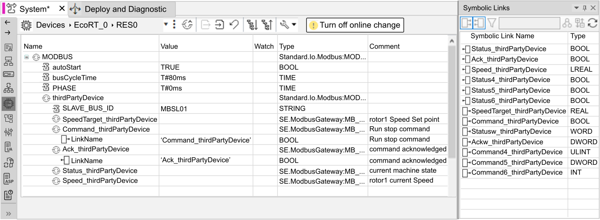

I/O are configured in EcoStruxure Automation Expert through the HW Configuration editor (associated to a device resource).
The application designer can select the bus master required for a given communication protocol, and then populate it with the available modules and I/O (depending on the chosen bus master).
Each channel will come with one or more symlink entry points where the current symlinks are to be mapped (created or mapped in this resource).

Refer to the topic Hardware Configuration Network in the EcoStruxure Automation Expert User Guide for more information.
Inside the Hardware Configuration editor:
: The input links appear with a pin on the left of the object.
: The output links with a pin on the right of the object.
Inside the Symbolic Links pad, the same icons are used, and the list of available symlinks in the current resource (mapped application instances or instances directly created in this resource) is shown.
To associate a given variable with an input or output, drag and drop it to an entry point of the same kind.
The type of the entry point (BOOL in the example) must match the type of the symlink, or an explicit conversion needs to be implemented.